set.seed(123)
u <- rnorm(500)
Y <- 0
X <- 0
for (i in 2:500) Y[i] <- Y[i-1]+u[i]
for (i in 2:500) X[i] <- Y[i]-Y[i-1]
plot(Y, type="l", main="Random walk without drift and white noise")
abline(h=0)
lines(X)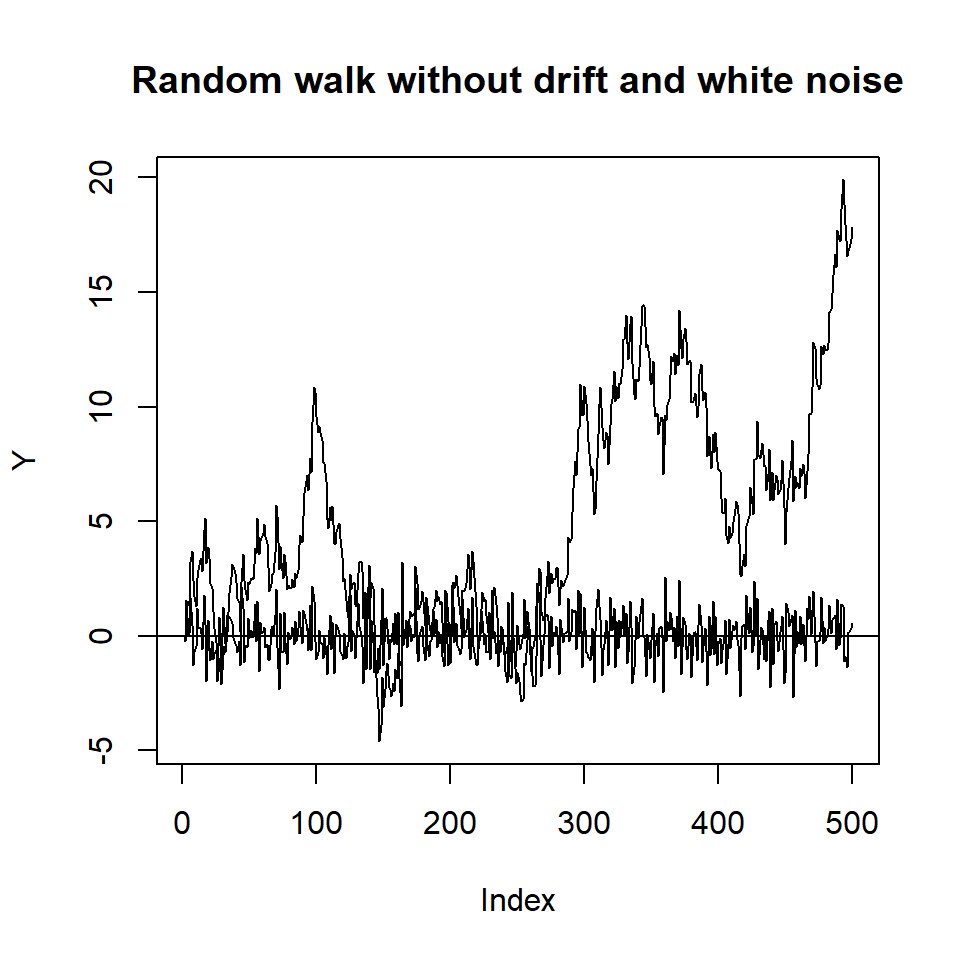
Classical time-series analysis proposes models in which the observed values of a series are expressed, for each period, as the combination of a deterministic systematic component, which is the main object of interest, and a residual random component to which no particular importance is attached. The components are generally not computed with formal statistical procedures, in the sense that many of these techniques rest on criteria that are valid mainly empirically. The immediate advantage is that computation is easy and fast and the results are often easier to interpret, with no need to meet strict conditions of applicability or to have a large number of observations. On the other hand, the stronger statistical framework provided by a stochastic approach would allow an in-depth analysis of the series, searching for its components with more refined and precise procedures able to adapt to the specific data, as well as better forecasting ability. For these reasons the stochastic (or modern) approach should be seen as complementary to, not an alternative to, the classical methods discussed earlier in the book.
In the modern approach the observed series \(Y\) does not derive from a combination of deterministic effects plus a random component, but is generated by a stochastic process. A stochastic process is a family of random variables \(X(t)\) ordered by a time parameter \(t\in T\), continuous or discrete; in typical economic series the time index is discrete.
From this perspective, a time series is interpreted as a finite part of a realisation of a stochastic process whose probabilistic structure is unknown, where \(T\) is the set of time points at which the process is defined. The same stochastic process can give rise to many different time series, just as different samples can be drawn from the same population.
Our aim is to estimate the characteristics of the stochastic process generating the series on the basis of the observed data of the only series available. We are therefore forced to restrict attention to specific and quite special stochastic processes, so that the link between process and series is stable and strong enough to infer information about the process from the series observed in reality; of particular importance are processes that are stationary in the strict or weak sense.
Weak stationarity, the less restrictive, holds when the three conditions below are met
\[ \begin{aligned} &E(X(t))=m && \text{for every } t \\ &E(X(t)-m)^{2}=\sigma^{2} && \text{finite, for every } t \\ &E(X(t)-m)(X(s)-m)=\gamma (|s-t|) && \text{for every pair } t, s \end{aligned} \tag{6.1} \]
As \(t\) varies, the mean is constant, the variance is finite and constant and, for every \(t\) and \(s\), the autocovariance function depends only on the lag \(|s-t|\). For Gaussian processes, weak stationarity also guarantees strict stationarity (which holds when the distribution of the multivariate random variable \((X(t_{1}),...,X(t_{n}))\) does not depend on \((t_{1},...,t_{n})\) for every \(n>1\)). We therefore assume that the process is always Gaussian.
A first important property is thus stationarity. Another is invertibility, that is, the possibility of expressing a process \(X(t)\) through past random variables, namely
\[ X(t)=\sum_{j} \delta_{j}X(t-j)+a_{t} \tag{6.2} \]
for \(j\) from 1 to \(\infty\), where \(a_{t}\) is a \(WN\) (white noise) process, normally distributed with mean 0 and constant variance.
From the single observed series we must therefore work back to the generating process; the autocorrelation function, that is, the autocorrelations at different time lags, helps us do this. First of all the process must be stationary; only then does the autocorrelation function have the meaning of an internal measure of the process, that is, of the linear relationship between the random variables \(X(t)\) and \(X(t-k)\) as \(k\) varies. Besides the (global) autocorrelation function, the partial autocorrelation function is computed (which considers the relationship between \(X(t)\) and \(X(t-k)\) holding \(X(t-1),...,X(t-k+1)\) fixed); both are shown graphically in correlograms.
Estimating the properties of a process from a single time sample of finite length is not obvious; it is legitimate, however, if the process is ergodic. A stochastic process is ergodic with respect to a parameter if the estimate of the parameter obtained from a time series tends to the parameter of the process as \(n\) tends to \(\infty\). Ergodicity guarantees that statistically consistent estimates of the stationary process can be obtained from the available information (the observed time series). The literature has shown that stationary processes are generally also ergodic, but this is not a sufficient condition.
Usually one is content to check stationarity and, if it does not hold, to try to achieve it by suitably transforming the original series; in many cases one or two successive differences are enough to come very close to stationarity.
The observed time series is regarded as a finite realisation of some underlying stochastic process. A general aim of modern time-series analysis is therefore also to make inferences about the properties of the stochastic process from the information contained in the observed series. In fact, statistical analysis does not succeed in identifying the stochastic process itself; starting from the data, it merely identifies a statistical model whose properties and characteristics are similar to those of the mechanism generating the process. The focus thus shifts to building a model that represents the stochastic process and summarises its main features.
We already know the autoregressive model of order \(p\), \(AR(p)\), now defined by the following relationship
\[ X(t)=\phi (1)X(t-1)+...+\phi (p)X(t-p)+a(t) \tag{6.3} \]
where the \(\phi (i)\) are constants and \(a(t)\sim WN\). If we define the lag operator \(B\) such that \(BX(t)=X(t-1)\), then
\[ B^{j}X(t)=X(t-j) \tag{6.4} \]
and so
\[ AR(p):\ \phi (B)X(t)=a(t) \tag{6.5} \]
with \(\phi (B)\) called the autoregressive operator of order \(p\). Essentially, \(AR\) models try to explain the present as a function of the past up to a certain time lag \(p\). It can be shown that an \(AR(p)\) process is always invertible, while it is stationary if and only if all the solutions of the characteristic equation \(\phi (B)=0\) are greater than 1 in modulus.
Besides the autoregressive form, a moving-average model of order \(q\), \(MA(q)\), is also often used, defined by the following relationship
\[ X(t)=a(t)-\theta (1)a(t-1)-...-\theta (q)a(t-q) \tag{6.6} \]
where again the \(\theta (i)\) are constants and \(a(t)\sim WN\). As in the previous case, it immediately follows that
\[ MA(q):\ X(t)=\theta (B)a(t) \tag{6.7} \]
with \(\theta (B)\) called the moving-average operator of order \(q\). \(MA(q)\) models thus try to explain the present as the result of a sequence of random shocks. It can be shown that an \(MA(q)\) process is always stationary, while it is invertible if and only if all the solutions of the characteristic equation \(\theta (B)=0\) are greater than 1 in modulus.
A third class, the so-called mixed models, combines \(AR(p)\) and \(MA(q)\). The generic \(ARMA(p,q)\) model can therefore be defined as
\[ \begin{gathered}X(t)-\phi (1)X(t-1)-...-\phi (p)X(t-p)= \\ =a(t)-\theta (1)a(t-1)-...-\theta (q)a(t-q)\end{gathered} \tag{6.8} \]
that is
\[ \phi (B)X(t)=\theta (B)a(t) \tag{6.9} \]
Consequently, an \(ARMA(p,q)\) process is stationary when all \(p\) roots of the characteristic equation of the \(AR\) component, \(\phi (B)=0\), are greater than 1 in modulus; it is invertible when all \(q\) roots of the characteristic equation of the \(MA\) component, \(\theta (B)=0\), are greater than 1 in modulus.
We can say that it is always necessary to achieve stationarity. There are apparent exceptions in cointegration analysis, where a linear combination of non-stationary time series may give rise to a stationary structure.
Non-stationarity in variance and covariance (the second and third conditions) is dealt with before attempting to formulate a suitable model, while non-stationarity in the mean is removed through a specific transformation that can be built into the structure of the model itself. In this case we speak of the generalisation to \(ARIMA(p,d,q)\) models, where \(d\) is the order of integration, that is, the number of times the series must be differenced. If \(\nabla\) is the difference operator such that
\[ \nabla^{d}X(t)=\nabla (\nabla^{d-1}X(t))=\nabla^{d-1}X(t)-\nabla^{d-1}X(t-1)=W(t) \tag{6.10} \]
we can write
\[ ARIMA(p,d,q):\ \phi_{p}(B)\nabla^{d}X(t)=\theta_{q}(B)a(t) \tag{6.11} \]
or (also without subscripts)
\[ \phi (B)W(t)=\theta (B)a(t) \tag{6.12} \]
The aim is now to find the ARMA or ARIMA model that is statistically best for the observed series.
In practice, given the time series, we estimate the global and partial autocorrelation functions up to a certain lag. Knowing these functions is generally not enough to identify the model; however, restricting attention to stationary and invertible ARMA models, there is a one-to-one correspondence between model and autocorrelation function. Moreover, assuming Gaussian as well as stationary and invertible processes, knowing the autocorrelation function is equivalent to knowing the process itself.
Note that the ARIMA notation alone is generally preferred, since ARMA models are the special case \(d=0\), just as AR and MA models are special cases.
In fact, the key step in analysing a time series is identifying the ARIMA model, that is, the values to give the parameters \((p,d,q)\) once all the required statistical conditions have been checked. The values of \(p\) and \(q\) are determined by studying the global autocorrelation function \(\rho (k)\) and the partial autocorrelation function \(\pi (k)\) (where \(k\) is the time lag), that is, by comparing the observed pattern with the theoretical pattern for \(AR(p)\), \(MA(q)\) and \(ARMA(p,q)\) processes (for which all the required conditions hold).
In particular, the global autocorrelation function of an \(MA(q)\) process is identically zero for \(k>q\), while its partial autocorrelation function decays exponentially towards 0 without ever vanishing. Conversely, the global autocorrelation function of an \(AR(p)\) process decays towards 0 as a linear combination of decaying exponentials and/or damped sine waves, without ever vanishing, while its partial autocorrelation function is zero for \(k>p\).
Consequently, the global autocorrelation function of an \(ARMA(p,q)\) process combines the AR and MA patterns: it never vanishes but decays exponentially towards 0 for lags \(k>(q-p)\); its partial autocorrelation function also combines the patterns of the AR and MA components, never vanishing but decaying exponentially towards 0 for lags \(k>(p-q)\).
Finally, once the order and type of model have been identified and the parameters estimated, the residuals are analysed to assess whether the model is correctly specified. If the outcome is unsatisfactory, the identification procedure is repeated in search of a better alternative.
If a series is seasonal, more complex SARIMA models must be formulated, that is, ARIMA models with a seasonal component of period \(s\). In this case we introduce the further seasonal difference operator \(\nabla_{s}\) (possibly of order \(D\)), such that
\[ \nabla_{s}X(t)=(1-B^{s})X(t)=X(t)-X(t-s) \tag{6.13} \]
The seasonal ARIMA is structured as two linked ARIMA models: if, for example, seasonality is monthly, a first model of order \((P,D,Q)\) studies the relationship between the values of the same month in successive years
\[ \Phi_{P}(B^{s})\nabla_{s}^{D}X(t)=\Theta_{Q}(B^{s})\alpha (t) \tag{6.14} \]
and a second model of order \((p,d,q)\) studies the relationship between values in different months of the same year, applied to the residuals \(\alpha (t)\) of the previous model
\[ \phi_{p}(B)\nabla^{d}\alpha (t)=\theta_{q}(B)a(t) \quad \text{with} \quad a(t)\sim WN \tag{6.15} \]
These two expressions easily give the general form of the seasonal ARIMA (SARIMA) model, with the obvious meaning of the symbols
\[ ARIMA(p,d,q)(P,D,Q)_{s}:\quad \phi_{p}(B)\Phi_{P}(B^{s})\nabla^{d}\nabla_{s}^{D}X(t)=\theta_{q}(B)\Theta_{Q}(B^{s})a(t) \tag{6.16} \]
Many examples in this chapter use random numbers. To make the results reproducible we set the seed of the generator (set.seed() in R, default_rng() in Python, call streaminit() in SAS); the three packages use different generators, however, so the simulated series, and the numbers derived from them, differ from each other and from those of the printed edition.
Let us now look at some specific examples. Suppose we have a time series and fit a model of the form \(Y_{t}=\beta_{1}+\beta_{2}t+\beta_{3}Y_{t-1}+u_{t}\). If \(\beta_{1}=\beta_{2}=0\) and \(\beta_{3}=1\), the model reduces to a random walk without a drift constant, a random walk without drift
\[ Y_{t}=Y_{t-1}+u_{t} \tag{6.17} \]
which is certainly not stationary. It is enough to recall what was said about \(AR(p)\) forms and to note that this is a first-order autoregressive model with a coefficient equal to one. If the residual component is white noise, first differences lead to stationarity, since \(Y_{t}-Y_{t-1}=u_{t}\) (Figure 6.1). Note that rnorm(500) generates 500 random numbers from an \(N(0,1)\) distribution.
import warnings
warnings.filterwarnings("ignore")
import numpy as np
import pandas as pd
import matplotlib.pyplot as plt
import statsmodels.api as sm
import statsmodels.formula.api as smf
rng = np.random.default_rng(123)
u = rng.standard_normal(500)
u[0] = 0
Y = np.cumsum(u) # Y[t] = Y[t-1] + u[t]
X = np.r_[0, np.diff(Y)] # first differences
plt.figure(figsize=(5, 5))
plt.plot(Y, color="black", linewidth=0.8)
plt.plot(X, color="black", linewidth=0.8)
plt.axhline(0, color="black")
plt.title("Random walk without drift and white noise")
plt.show()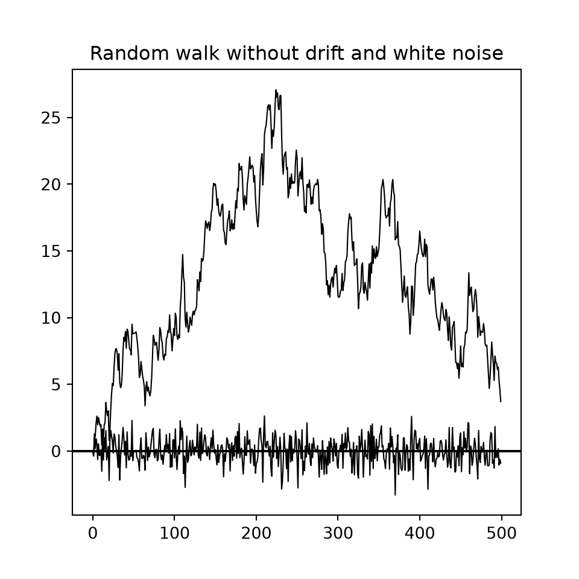
We also say that the random walk without drift is integrated of order 1, \(\sim I(1)\), because a single first difference is enough to make it stationary.
If \(\beta_{2}=0\) and \(\beta_{3}=1\) we obtain a random walk with drift
\[ Y_{t}=\beta_{1}+Y_{t-1}+u_{t} \tag{6.18} \]
The first difference gives a stationary series, \(Y_{t}-Y_{t-1}=\beta_{1}+u_{t}\), and we say that \(Y\) has a stochastic trend. If only \(\beta_{3}=0\), we obtain \(Y_{t}=\beta_{1}+\beta_{2}t+u_{t}\), which is non-stationary unless the trend (this time deterministic) is removed: \(Y_{t}-(\beta_{1}+\beta_{2}t)=u_{t}\).
For an example of stochastic and deterministic trends in a time series, we generate 500 random values from an \(N(0,1)\) distribution (Figure 6.2).
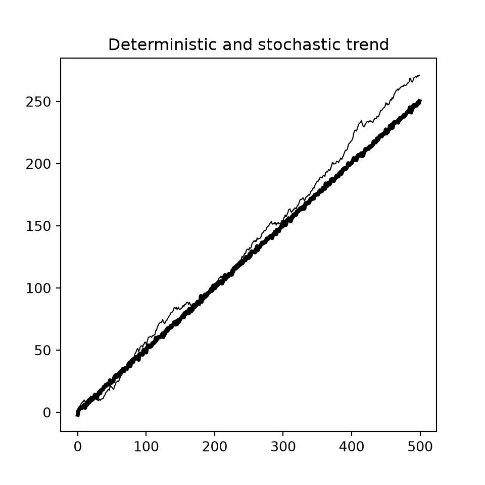
With a deterministic trend (the bold line in Figure 6.2) the fluctuation is barely noticeable and limited to short up-and-down movements with no visible effect on the underlying tendency of the series; the stochastic trend, by contrast, shows the significant effect of the random component on the underlying tendency of the generated series.
What we have said so far makes clear the importance of working with stationary series, that is, integrated of order 0; first differences are useful in many cases and, if \(d\) differences make the series \(Y\) stationary, we say that \(Y_{t}\sim I(d)\). When series are not stationary, apart from some specific exceptions, analysing them over time leads to misleading results. To see this, we generate 500 observations from two random-walk models; the two series are integrated of order 1 and certainly unrelated, since they are generated by drawing random components from two Normal distributions with mean 0 and variance 1. So there should be no significant relationship between the two series; yet, if we estimate a linear model, we might obtain results such as the following.
Call:
lm(formula = Y ~ X)
Residuals:
Min 1Q Median 3Q Max
-11.277 -4.347 -1.163 4.467 12.355
Coefficients:
Estimate Std. Error t value Pr(>|t|)
(Intercept) 5.82419 0.32118 18.13 <2e-16 ***
X 0.85936 0.03698 23.24 <2e-16 ***
---
Signif. codes: 0 '***' 0.001 '**' 0.01 '*' 0.05 '.' 0.1 ' ' 1
Residual standard error: 5.464 on 498 degrees of freedom
Multiple R-squared: 0.5202, Adjusted R-squared: 0.5193
F-statistic: 540 on 1 and 498 DF, p-value: < 2.2e-16 OLS Regression Results
==============================================================================
Dep. Variable: y R-squared: 0.822
Model: OLS Adj. R-squared: 0.822
Method: Least Squares F-statistic: 2300.
Date: sab, 31 ott 2026 Prob (F-statistic): 8.86e-189
Time: 20:50:18 Log-Likelihood: -1546.4
No. Observations: 500 AIC: 3097.
Df Residuals: 498 BIC: 3105.
Df Model: 1
Covariance Type: nonrobust
==============================================================================
coef std err t P>|t| [0.025 0.975]
------------------------------------------------------------------------------
const -5.3153 0.390 -13.634 0.000 -6.081 -4.549
x1 0.7320 0.015 47.956 0.000 0.702 0.762
==============================================================================
Omnibus: 23.464 Durbin-Watson: 0.050
Prob(Omnibus): 0.000 Jarque-Bera (JB): 23.044
Skew: 0.481 Prob(JB): 9.91e-06
Kurtosis: 2.576 Cond. No. 41.7
==============================================================================
Notes:
[1] Standard Errors assume that the covariance matrix of the errors is correctly specified.The estimates are significant, the coefficient of determination is far from 0 and the \(F\) statistic is also significant. In essence, a relationship is signalled which, given how the data were generated, we know does not exist: this is spurious regression. These results are clearly misleading; indeed, re-estimating the model on the differences (the diff() command) we might obtain the following (the estimates change every time the random values are generated anew).
Call:
lm(formula = dY ~ dX)
Residuals:
Min 1Q Median 3Q Max
-2.7932 -0.6715 -0.0040 0.6755 3.2426
Coefficients:
Estimate Std. Error t value Pr(>|t|)
(Intercept) -0.02860 0.04347 -0.658 0.511
dX 0.02855 0.04488 0.636 0.525
Residual standard error: 0.9704 on 497 degrees of freedom
Multiple R-squared: 0.0008136, Adjusted R-squared: -0.001197
F-statistic: 0.4047 on 1 and 497 DF, p-value: 0.525 OLS Regression Results
==============================================================================
Dep. Variable: y R-squared: 0.000
Model: OLS Adj. R-squared: -0.002
Method: Least Squares F-statistic: 0.0001701
Date: sab, 31 ott 2026 Prob (F-statistic): 0.990
Time: 20:50:18 Log-Likelihood: -663.02
No. Observations: 499 AIC: 1330.
Df Residuals: 497 BIC: 1338.
Df Model: 1
Covariance Type: nonrobust
==============================================================================
coef std err t P>|t| [0.025 0.975]
------------------------------------------------------------------------------
const -0.0365 0.041 -0.888 0.375 -0.117 0.044
x1 0.0005 0.039 0.013 0.990 -0.076 0.077
==============================================================================
Omnibus: 2.835 Durbin-Watson: 2.203
Prob(Omnibus): 0.242 Jarque-Bera (JB): 3.004
Skew: 0.054 Prob(JB): 0.223
Kurtosis: 3.364 Cond. No. 1.09
==============================================================================
Notes:
[1] Standard Errors assume that the covariance matrix of the errors is correctly specified.The first-difference series are, by construction, two stationary white noises, and indeed modello2 shows no significant relationship between \(dX\) and \(dY\).
The variables \(X\) and \(Y\) were generated by a random-walk model without drift, that is, an \(AR(1)\) without constant and with the coefficient of the regressor equal to 1. In reality we have observed time series whose generating process, and hence the appropriate model, is not known a priori; the global and partial autocorrelation functions are very useful for this purpose. Recalling that the estimated covariance at lag \(k\) is
\[ \hat{\gamma}_{k}=\sum (Y_{t}-\bar{Y})(Y_{t+k}-\bar{Y})/n \tag{6.19} \]
with \(\hat{\gamma}_{0}=\sum (Y_{t}-\bar{Y})^{2}/n\), the estimated autocorrelation function at lag \(k\) is
\[ \hat{\rho}_{k}=\hat{\gamma}_{k}/\hat{\gamma}_{0} \tag{6.20} \]
It is then fairly easy to build the corresponding correlograms. For convenience we use the functions acf() and pacf(), first on the white noise (Figure 6.3) and then on the random walk without drift (Figure 6.4).
The plots correspond to the following values (the first 5 are shown; we have excluded lag 0, which acf() includes).
acf WN pacf WN acf RW pacf RW
[1,] -0.011 -0.011 0.988 0.988
[2,] -0.008 -0.008 0.977 0.013
[3,] -0.055 -0.055 0.966 0.011
[4,] 0.012 0.011 0.957 0.035
[5,] 0.008 0.008 0.947 -0.007 acf WN pacf WN acf RW pacf RW
1 -0.102 -0.102 0.995 0.997
2 -0.074 -0.086 0.990 0.047
3 0.044 0.027 0.985 0.047
4 0.036 0.038 0.981 0.008
5 -0.008 0.006 0.976 -0.066While the correlogram of the white noise shows no systematic pattern worth noting, with values almost always inside the non-significance bands (the dashed lines in the plots, built using \(\hat{\rho}_{k}\sim N(0,1/n)\)), the random walk shows a pattern reminiscent of autoregressive models but with a very slow decay of the ACF: at the fifth lag the autocorrelation is still extremely high (0.967 in the printed edition); this is a classic consequence of non-stationarity. The problem arises because the autoregressive coefficient equals one. Indeed, if \(Y_{t}=\rho Y_{t-1}+u_{t}\), but now \(-1<\rho <1\), for example \(\rho =0.3\), we obtain Figure 6.5
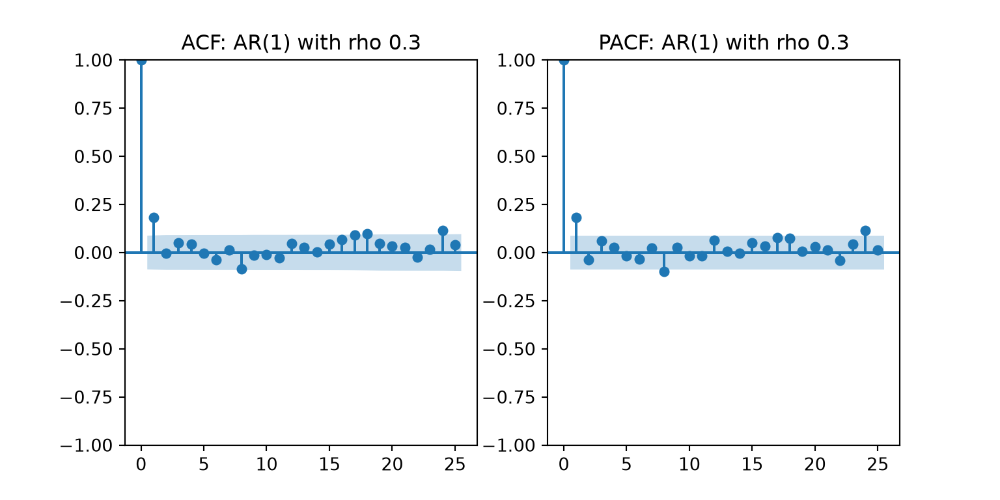
and even more clearly if we directly compare the random walk \(Y\) with the series \(G\) just created (Figure 6.6).
To assess the significance of the autocorrelation at the various time lags, besides the confidence bands shown by default in the plots, the Box-Pierce \(Q\) statistic is often used
\[ Q_{m}=n\sum_{k=1}^{m} \hat{\rho}_{k}^{2} \tag{6.21} \]
which tests the hypothesis of zero autocorrelation up to lag \(m\) against a \(\chi^{2}\) distribution with \(m\) degrees of freedom. Another well-known test is based on the Ljung-Box statistic
\[ LB=n(n+2)\sum_{k=1}^{m} (\hat{\rho}_{k}^{2}/(n-k)) \tag{6.22} \]
which also follows a \(\chi^{2}\) distribution with \(m\) degrees of freedom. In R both tests are available through Box.test(); let us apply them, for example up to lag 10, to the white noise \(u\) and to the series \(G\).
Let us go back to our \(AR(1)\) model without constant, \(Y_{t}=\rho Y_{t-1}+u_{t}\). We have seen that with \(\rho =1\) the series is non-stationary; \(\rho <1\) poses no such problem, while we do not consider \(\rho >1\), since the series would follow an unrealistic explosive path (Figure 6.7), inconsistent moreover with our working assumptions and with the meaning attributed to \(\rho\). We set aside for now the case \(-1<\rho <0\) and, as with values greater than one, we do not consider \(\rho <-1\).
The question now is how to test whether \(\rho =1\), that is, whether there is a unit root. The test used is the Dickey-Fuller test, for three possible versions of the suitably reparameterised model:
where in all cases \(\delta =\rho -1\).
In particular, the Dickey-Fuller test tests the null hypothesis \(\delta =0\) (there is a unit root, so the series is not stationary). Under the more general assumption that the residuals \(u_{t}\) may be correlated, the augmented version of the three models is preferred, which includes among the explanatory variables the lagged differences of the dependent variable up to some lag. The test on \(\delta\), known as the Dickey-Fuller (\(DF\)) or augmented Dickey-Fuller (\(ADF\)) test, does not follow Student’s t even in large samples, and a specific \(\tau\) distribution must be used to assess its significance.
We load the constant-price data in logreddito.csv on the logarithm of disposable income and the logarithm of household consumption in the United States from the first quarter of 1954 to the fourth quarter of 1994. We want to check whether the log of income is stationary (Figure 6.8).
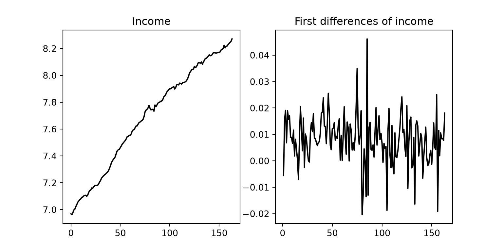
proc import datafile="data/logreddito.csv" out=lr dbms=dlm replace;
delimiter=";"; getnames=yes;
run;
data lr; set lr; t = _n_; dreddito = dif(lreddito); run;
proc sgplot data=lr; title "Income"; series x=t y=lreddito; run;
proc sgplot data=lr; title "First differences of income"; series x=t y=dreddito; run;The income series clearly shows strong signs of non-stationarity. In particular, estimating a first-order autoregression gives a coefficient very close to one, that is, a \(\rho -1\) very close to 0. We estimate the model for the \(DF\) test, where the t statistic must be assessed with great caution, since it now follows a different distribution (here the p-value produced by default by the software cannot be used).
(Intercept) Y1
0.03860559 0.99601654
Call:
lm(formula = dY ~ Y1)
Residuals:
Min 1Q Median 3Q Max
-0.027981 -0.004469 0.000053 0.004992 0.038346
Coefficients:
Estimate Std. Error t value Pr(>|t|)
(Intercept) 0.038606 0.014392 2.682 0.00807 **
Y1 -0.003983 0.001871 -2.130 0.03473 *
---
Signif. codes: 0 '***' 0.001 '**' 0.01 '*' 0.05 '.' 0.1 ' ' 1
Residual standard error: 0.009194 on 161 degrees of freedom
Multiple R-squared: 0.0274, Adjusted R-squared: 0.02135
F-statistic: 4.535 on 1 and 161 DF, p-value: 0.03473Intercept 0.038606
Y1 0.996017
dtype: float64==============================================================================
coef std err t P>|t| [0.025 0.975]
------------------------------------------------------------------------------
Intercept 0.0386 0.014 2.682 0.008 0.010 0.067
Y1 -0.0040 0.002 -2.130 0.035 -0.008 -0.000
==============================================================================In particular, one can check that the augmented Dickey-Fuller test (\(ADF\)), unlike the traditional \(t\) test, accepts the null hypothesis \(\delta =0\) and therefore signals that income is not stationary, with ADF = −0.7729 up to lag 5 and p-value = 0.9621; likewise, it indicates that the first differences are stationary, with ADF = −5.4756 up to lag 5 and p-value = 0.01.
Base R has no function for the ADF statistic: external packages are needed, such as tseries, which provides adf.test() (model with constant and trend; by default the number of lags is \(\lfloor (n-1)^{1/3} \rfloor\), here 5).
Augmented Dickey-Fuller Test
data: reddito
Dickey-Fuller = -0.77285, Lag order = 5, p-value = 0.9621
alternative hypothesis: stationary
Augmented Dickey-Fuller Test
data: diff(reddito)
Dickey-Fuller = -5.4756, Lag order = 5, p-value = 0.01
alternative hypothesis: stationaryThe p-values of the ADF test are computed with different approximations: adf.test() interpolates the Dickey-Fuller tables and truncates the values at the extremes (0.01 and 0.99), while statsmodels and SAS use MacKinnon’s approximations. The test statistic is the same.
The series may be stationary around a deterministic trend; in that case, removing the trend may be enough to achieve stationarity, without taking differences. We add a linear trend to the initial model.
==============================================================================
coef std err t P>|t| [0.025 0.975]
------------------------------------------------------------------------------
Intercept 0.1138 0.104 1.090 0.277 -0.092 0.320
Y1 0.9853 0.015 66.254 0.000 0.956 1.015
t 8.848e-05 0.000 0.727 0.468 -0.000 0.000
==============================================================================Note the use of I() to build the time index inside lm(). There is no significant deterministic trend; so the series appears to be difference-stationary rather than stationary around a linear deterministic trend, although the trend could take more complex forms, such as quadratic or cubic ones (our income series in fact shows a clearly linear pattern). Let us nevertheless detrend the income series and repeat the Dickey-Fuller test.
Given how modello4 is defined, its residuals are the detrended series \(Y\). On the series detrend, the augmented DF statistic up to lag 5 equals −0.7729, with p-value 0.9621; so, confirming the previous result, the linearly detrended log income series is still non-stationary.
A remark on the logarithmic transformation of the previous series. It is widely used for time series because, on the one hand, it linearises the trend (for example in the log-linear model) and, on the other, it reduces and tends to stabilise the variance, with considerable advantages for data analysis. Moreover, in the log-linear model the coefficients typically have the economic interpretation of elasticities. If, for example, consumption and income are linked by an exponential model, the double-log transformation makes the model linear and gives the estimates the meaning of the elasticity of consumption with respect to income, which is clearly useful for interpretation.
We have already seen that regressing one non-stationary series on another can produce entirely misleading results (spurious regression) and that modelling variables over time is generally wrong if the series are not stationary. There is at least one important exception.
We load the data in gdpusa.csv, which for the United States reports (at constant prices) GDP (pil), disposable income (redd), household consumption (cons), and the profits and dividends of some companies, for 88 quarters from 1970Q1 to 1991Q4. We estimate a simple linear consumption function with income as the explanatory variable
\[ C=\alpha +\beta R+u \tag{6.23} \]
==============================================================================
coef std err t P>|t| [0.025 0.975]
------------------------------------------------------------------------------
Intercept -171.4412 22.917 -7.481 0.000 -216.999 -125.883
redd 0.9672 0.008 119.871 0.000 0.951 0.983
==============================================================================It is easy to check that both consumption and income are \(I(1)\), a first difference being enough to make them stationary. So the results of model modc are wrong, with one important exception: if the residual series turns out to be stationary.
[-0.27531223] [-3.77907067]CointResult(coint_t=-3.7790706719922773, pvalue=0.014451783159283802, critical_values=array([-4.02675342, -3.40726247, -3.09355879]))As in the direct stationarity test, where the empirical t value is compared not with Student’s t but with the Dickey-Fuller \(\tau\) distribution, for the residuals of a model with non-stationary series specific theoretical values are used, such as those tabulated by Engle and Granger (other distributions are also available); the test carried out under these conditions is known as a test of cointegration between consumption and income.
Base R cannot run these tests without loading external packages, but it suffices to know that in our example the empirical t value lies beyond the acceptance region of the non-stationarity hypothesis under the Engle-Granger distribution, so the residuals are stationary. Consequently, modc is not a spurious regression but a cointegrating regression, which identifies the long-run equilibrium relationship between consumption and income. Thus 0.967 is the long-run marginal propensity to consume.
If the cointegrating relationship represents a long-run equilibrium, there will be short-run disequilibrium, represented by departures from that relationship, that is, by the residual \(u=C-\alpha -\beta R\). Since consumption and income in our example are cointegrated, by the Granger representation theorem it can be shown that changes in consumption depend on changes in income up to the correction factor \(u\), hence the name “error-correction model” (ECM)
\[ \Delta C_{t}=\alpha_{0}+\alpha_{1}\Delta R_{t}+\alpha_{2}u_{t-1}+\varepsilon_{t} \quad \text{where} \quad \varepsilon \sim WN \tag{6.24} \]
For our example
==============================================================================
coef std err t P>|t| [0.025 0.975]
------------------------------------------------------------------------------
Intercept 11.6918 2.196 5.325 0.000 7.325 16.058
dr 0.2906 0.070 4.172 0.000 0.152 0.429
u1 -0.0867 0.054 -1.600 0.113 -0.194 0.021
==============================================================================Simplifying somewhat, we could say that the estimated correction coefficient is not statistically significant, suggesting an instantaneous adjustment of consumption to changes in income; in particular, the short-run marginal propensity to consume is 0.291.
Of course the problem is much more complex than presented here, and there are many theoretical considerations and practical and interpretive cautions that must be studied in specific advanced courses.
So far we have presented some autoregressive forms, almost always specifying first-order models with a positive autoregressive coefficient (preferably below one), and justifying this choice by the cases most commonly found in macroeconomic reality. Nevertheless, it is useful to see how an AR process behaves with very different values of \(\rho\). We simulate 100 observations from the \(AR(1)\) model without constant \(Y_{t}=\rho Y_{t-1}+u_{t}\), with values of \(\rho\) also outside the range usually considered (Figure 6.9).
u = rng.standard_normal(100)
coe = [0.0, 0.3, 0.7, 1.0, 1.1, -0.2, -0.8, -1.0, -1.1]
Ysim = np.zeros((100, 9))
for j, c in enumerate(coe):
for i in range(1, 100):
Ysim[i, j] = c * Ysim[i - 1, j] + u[i]
fig, ax = plt.subplots(3, 3, figsize=(8, 8))
for j, a in enumerate(ax.flat):
a.plot(Ysim[:, j], color="black", linewidth=0.8); a.set_title(coe[j])
plt.tight_layout(); plt.show()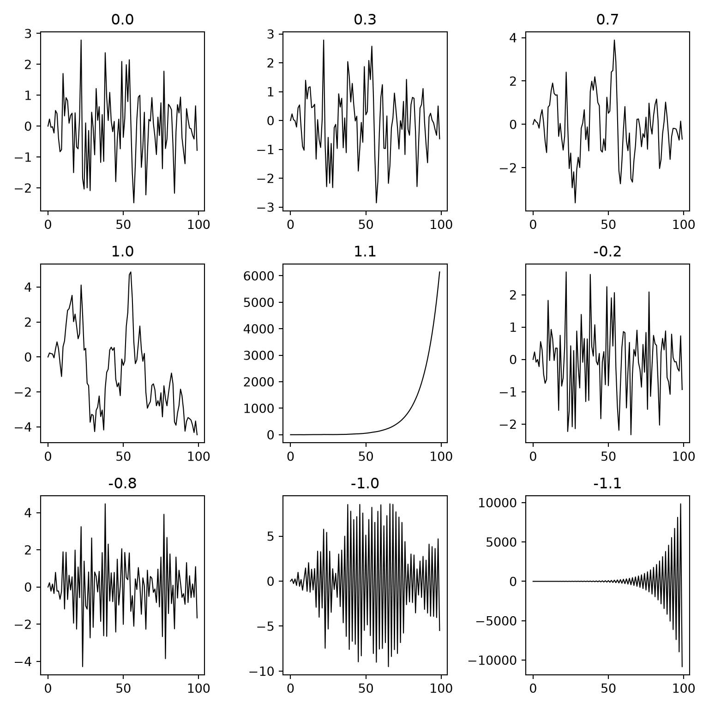
data ar_sim;
call streaminit(2024);
array coe[9] _temporary_ (0.0 0.3 0.7 1.0 1.1 -0.2 -0.8 -1.0 -1.1);
array y[9] y1-y9;
do j = 1 to 9; y[j] = 0; end;
do t = 1 to 100;
u = rand("normal");
if t > 1 then do j = 1 to 9; y[j] = coe[j]*y[j] + u; end;
output;
end;
drop j;
run;
/* one plot for each coefficient, e.g. rho = 0.7 */
proc sgplot data=ar_sim; title "rho = 0.7"; series x=t y=y3; run;These plots make it clear that (weak) stationarity must hold not only in the mean but also in variance and covariance. Differencing is very useful above all for non-stationarity in the mean, certainly the most common and most important case, since it concerns the historical evolution of the phenomenon directly. Achieving stationarity in variance and covariance, by contrast, is more complex and is generally obtained by suitably transforming the series itself before applying any model.
Likewise, it is interesting to look at the corresponding global (Figure 6.10) and partial (Figure 6.11) autocorrelation functions.
So far we have considered autoregressive models, assuming that a series can be explained by its own past behaviour. This information can also be very useful for good forecasting. Statistical assessment aside, these models are reasonable for many macroeconomic series such as GDP, consumption, investment, etc.
For other kinds of series, however, it seems plausible to assume also, or only, a dependence on the random component, as suggested by moving-average (MA) models; for example, a first-order moving-average model is
\[ Y_{t}=\mu +\beta_{0}u_{t}+\beta_{1}u_{t-1} \quad \text{where } \mu \text{ is a constant and } u\sim WN \tag{6.25} \]
Combining the two kinds of effects, AR and MA, say of order 1, leads to an \(ARMA(1,1)\) of the form
\[ Y_{t}=\theta +\alpha_{1}Y_{t-1}+\beta_{0}u_{t}+\beta_{1}u_{t-1} \quad \text{where } \theta \text{ is a constant} \tag{6.26} \]
Recalling what was introduced earlier, this model is nothing but an \(ARIMA(1,0,1)\), that is, without differencing. Using this more general notation for convenience, a first-order autoregression without differencing is an \(ARIMA(1,0,0)\) and, similarly, a first-order moving average is an \(ARIMA(0,0,1)\).
Having analysed the series and studied the autocorrelation functions, we formulate the ARIMA model of the order that seems most suitable; of course, if the model fits the data well, and the generating process has thus been identified and well approximated, the residuals must be white noise, or as close to it as possible; this is certainly the simplest but also one of the most important diagnostics: if the behaviour of the residuals is unsatisfactory, a better model must be sought.
This approach is clearly data-driven, since the search for the best ARIMA model does not follow economic theory. Moreover, the autocorrelation functions do not always give clear indications, especially with seasonal data and/or autoregressive and moving-average orders above one. Comparing empirical and theoretical correlograms is particularly useful here.
Below we show the global and partial autocorrelation functions for 500 observations simulated with arima.sim() from some ARIMA models (Figures 6.12 and 6.13); the specification, with the coefficient values, is shown directly in the plots (note the use of the while() loop, convenient here for building the two figures).
valori <- c(0.6,0.2,-0.5,0.3,0.7,-0.4,-0.8,-0.5)
par(mfrow=c(4,3)); i <- 1
while (i<8) {
acf(arima.sim(list(ar=valori[i]), n=500),
main=paste("ARIMA(1,0,0)", valori[i], sep=" "), lag.max=10)
acf(arima.sim(list(ma=valori[i+1]), n=500),
main=paste("ARIMA(0,0,1)", valori[i+1], sep=" "), lag.max=10)
acf(arima.sim(list(ar=valori[i], ma=valori[i+1]), n=500),
main=paste("ARIMA(1,0,1)", valori[i], valori[i+1], sep=" "), lag.max=10)
i <- i+2
}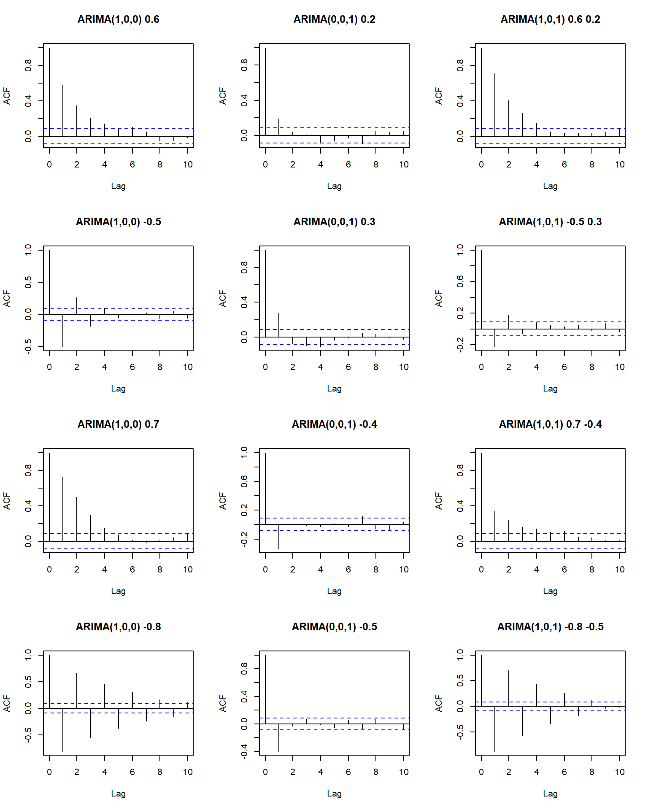
from statsmodels.tsa.arima_process import arma_generate_sample
valori = [0.6, 0.2, -0.5, 0.3, 0.7, -0.4, -0.8, -0.5]
def simula(ar=0.0, ma=0.0, n=500):
# statsmodels uses the polynomials (1 - ar*B) and (1 + ma*B), like R's arima.sim()
return arma_generate_sample([1, -ar], [1, ma], nsample=n,
distrvs=rng.standard_normal)
casi = []
for i in range(0, 8, 2):
a, m = valori[i], valori[i + 1]
casi += [(f"ARIMA(1,0,0) {a}", simula(ar=a)), (f"ARIMA(0,0,1) {m}", simula(ma=m)),
(f"ARIMA(1,0,1) {a} {m}", simula(ar=a, ma=m))]
fig, ax = plt.subplots(4, 3, figsize=(8, 10))
for (titolo, x), a in zip(casi, ax.flat):
plot_acf(x, ax=a, lags=10, title=titolo)
plt.tight_layout(); plt.show()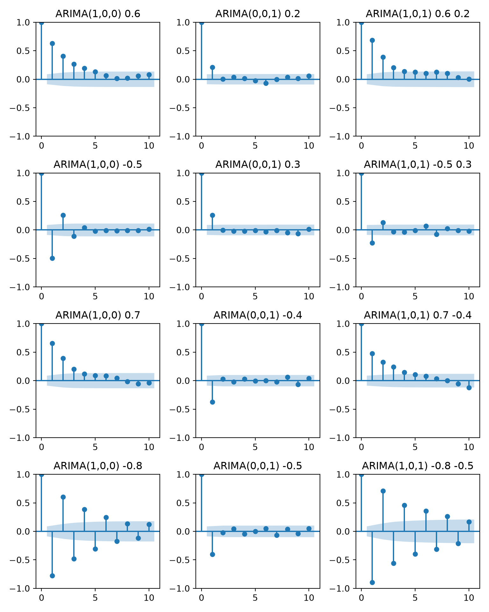
/* simulation of an ARMA(1,1) with phi=0.6 and theta=0.2 (R convention: + theta*u(t-1)) */
data arma;
call streaminit(77);
y = 0; e1 = 0;
do t = -50 to 500; /* 50 "burn-in" values discarded */
e = rand("normal");
y = 0.6*y + e + 0.2*e1;
e1 = e;
if t > 0 then output;
end;
run;
proc arima data=arma plots=(series(acf pacf));
identify var=y nlag=10;
run;
quit;par(mfrow=c(4,3)); i <- 1
while (i<8) {
pacf(arima.sim(list(ar=valori[i]), n=500),
main=paste("ARIMA(1,0,0)", valori[i], sep=" "), lag.max=10)
pacf(arima.sim(list(ma=valori[i+1]), n=500),
main=paste("ARIMA(0,0,1)", valori[i+1], sep=" "), lag.max=10)
pacf(arima.sim(list(ar=valori[i], ma=valori[i+1]), n=500),
main=paste("ARIMA(1,0,1)", valori[i], valori[i+1], sep=" "), lag.max=10)
i <- i+2
}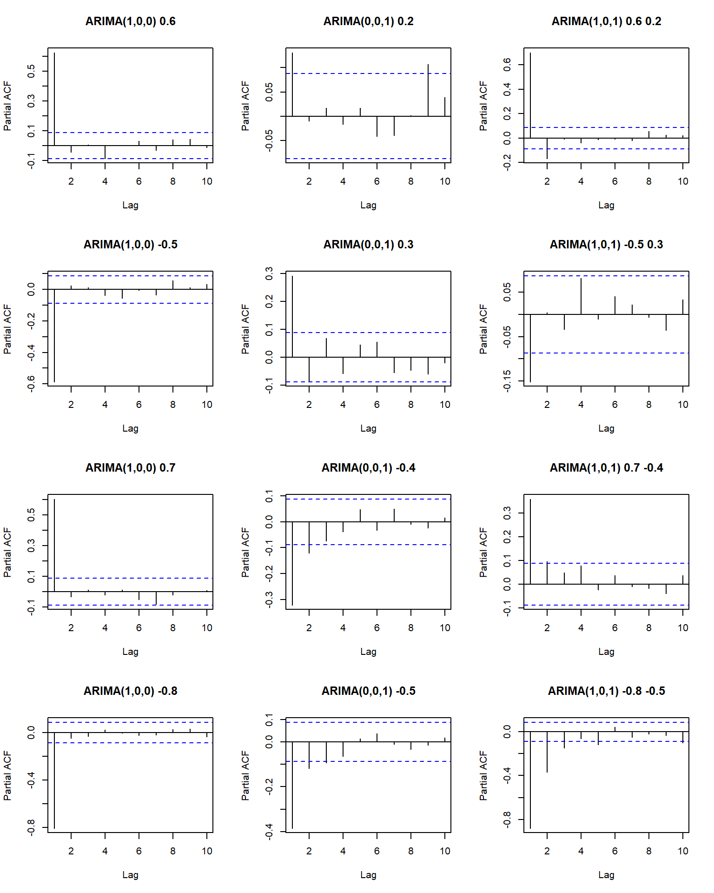
SARIMA (seasonal ARIMA) models have correlograms entirely similar to those of non-seasonal ARIMA models; in particular, the autocorrelation functions show cyclical variations at the seasonal lags. In base R (without external packages), arima.sim() cannot simulate seasonal data directly; this is not a real limitation, since a SARIMA is nothing but a suitable combination of two ARIMA models, one applied to the non-seasonal movements of the series and the other to the seasonal fluctuations; we will come back to this shortly with an example.
We load the data on consumption of non-durable goods (at constant prices) in the United Kingdom from the first quarter of 1955 to the fourth quarter of 1988, in the file consnd.csv. We look for an ARIMA model for these data, restricting the series to 1955-1970 so as to use the remaining years to assess forecasting performance ex post.
For the reasons already mentioned, the series has been log-transformed. Figure 6.14 shows the corresponding ACF and PACF.
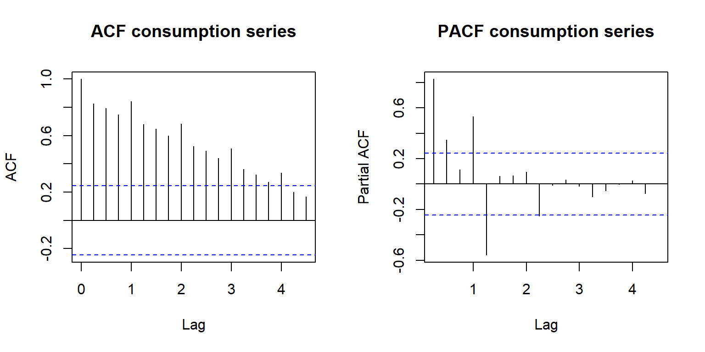
cnd = pd.read_csv("data/consnd.csv", sep=";")
consumiuk = pd.Series(cnd["consnd"].to_numpy(dtype=float),
index=pd.period_range("1955Q1", periods=len(cnd), freq="Q"))
consumo = np.log(consumiuk[:"1970Q4"])
fig, ax = plt.subplots(1, 2, figsize=(8, 4))
plot_acf(consumo, ax=ax[0], lags=16, title="ACF consumption series")
plot_pacf(consumo, ax=ax[1], lags=16, title="PACF consumption series")
plt.show()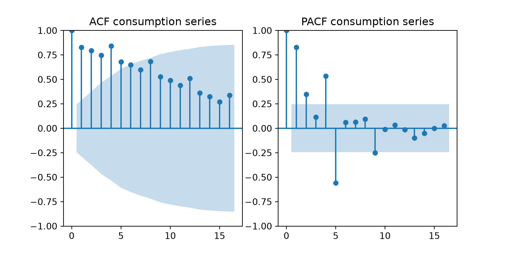
The series shows seasonal peaks and does not appear stationary. We difference it; lag 1 is not enough, so we also difference at the seasonal lag (the data have a seasonal period of 4, matching the quarterly cycle): the result is much better (Figure 6.15).
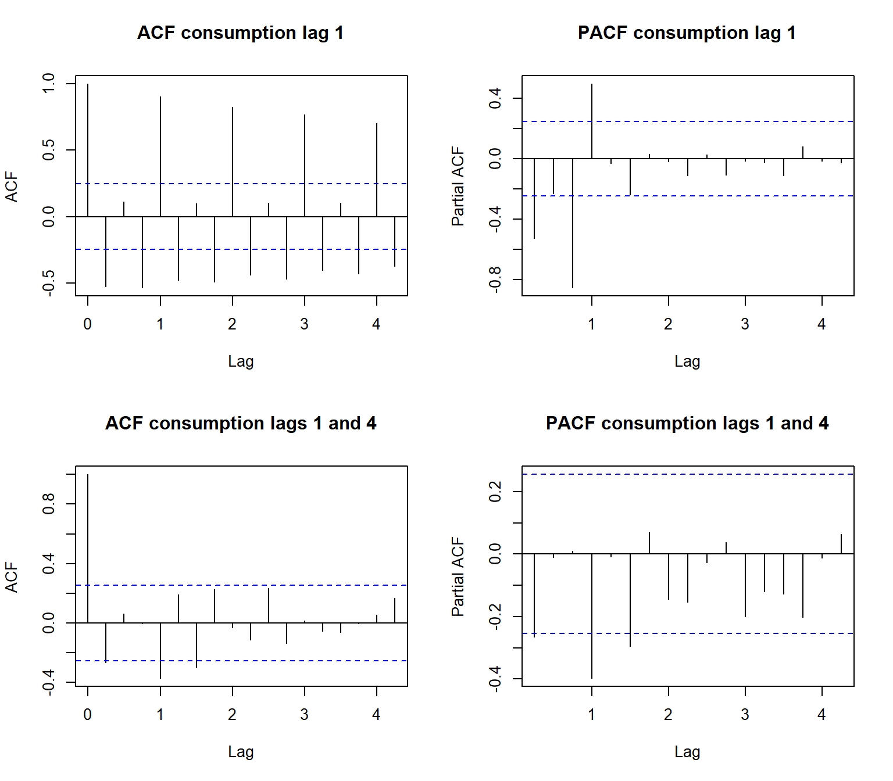
d1 = consumo.diff().dropna()
d14 = consumo.diff().diff(4).dropna()
fig, ax = plt.subplots(2, 2, figsize=(8, 7))
plot_acf(d1, ax=ax[0, 0], lags=16, title="ACF consumption lag 1")
plot_pacf(d1, ax=ax[0, 1], lags=16, title="PACF consumption lag 1")
plot_acf(d14, ax=ax[1, 0], lags=16, title="ACF consumption lags 1 and 4")
plot_pacf(d14, ax=ax[1, 1], lags=16, title="PACF consumption lags 1 and 4")
plt.tight_layout(); plt.show()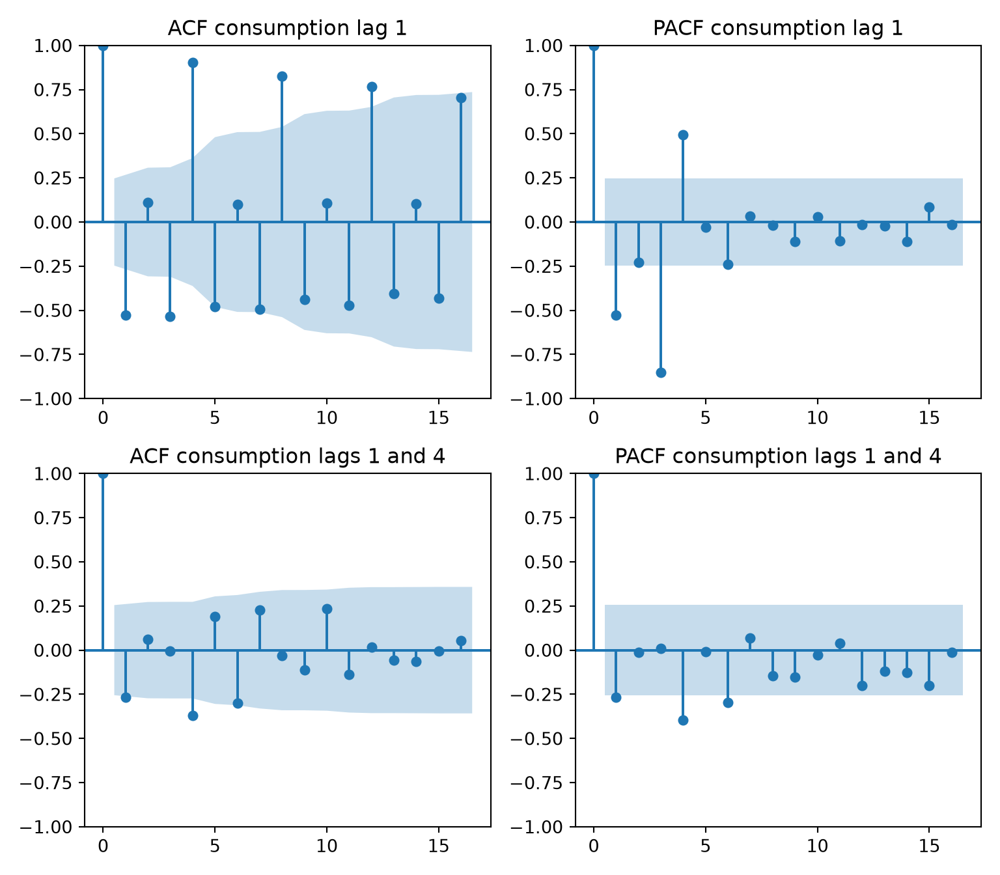
The autocorrelation functions do not point to a clear model specification, but they certainly suggest the two differencing operations, at lag 1 for the non-seasonal part and at the seasonal lag for the seasonal part.
We try a few models, choosing the best in terms of the AIC criterion and with residuals as close as possible to white noise. For brevity we estimate only low-order models. The first model is an \(ARIMA(1,1,1)(1,1,1)_{4}\), the second an \(ARIMA(1,1,0)(1,1,0)_{4}\), the third an \(ARIMA(0,1,1)(0,1,1)_{4}\).
ar1 ma1 sar1 sma1
0.5218448 -0.8598077 0.4278748 -0.9996419 ar1 sar1
-0.2749615 -0.3981325 ma1 sma1
-0.3530235 -0.5827546 [1] -368.7176[1] -365.3164[1] -370.2744from statsmodels.tsa.statespace.sarimax import SARIMAX
ordini = {"a": ((1, 1, 1), (1, 1, 1, 4)), "b": ((1, 1, 0), (1, 1, 0, 4)), "c": ((0, 1, 1), (0, 1, 1, 4))}
modelli = {k: SARIMAX(consumo, order=o, seasonal_order=s).fit(disp=False) for k, (o, s) in ordini.items()}
for k, m in modelli.items():
print(k, m.params.drop("sigma2").round(4).to_dict(), "AIC:", round(m.aic, 2))a {'ar.L1': 0.5019, 'ma.L1': -0.8374, 'ar.S.L4': 0.4079, 'ma.S.L4': -0.9654} AIC: -368.68
b {'ar.L1': -0.2699, 'ar.S.L4': -0.3949} AIC: -365.32
c {'ma.L1': -0.3491, 'ma.S.L4': -0.5791} AIC: -370.28Note that arima() does not include the period option, since the consumption series has already been defined as a seasonal time series with period 4; otherwise it must be specified.
The AIC criterion suggests the third model; note that both coefficients are negative and significant, while the correlograms of the residuals are shown in Figure 6.16.
Call:
arima(x = consumo, order = c(0, 1, 1), seasonal = c(0, 1, 1))
Coefficients:
ma1 sma1
-0.353 -0.5828
s.e. 0.143 0.1382
sigma^2 estimated as 9.649e-05: log likelihood = 188.14, aic = -370.27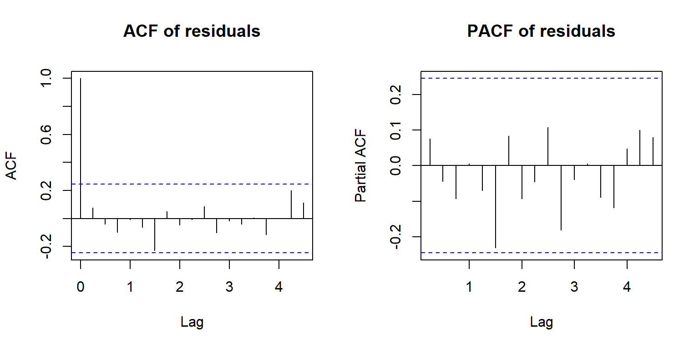
==============================================================================
coef std err z P>|z| [0.025 0.975]
------------------------------------------------------------------------------
ma.L1 -0.3491 0.112 -3.116 0.002 -0.569 -0.130
ma.S.L4 -0.5791 0.156 -3.707 0.000 -0.885 -0.273
sigma2 9.651e-05 1.8e-05 5.349 0.000 6.11e-05 0.000
==============================================================================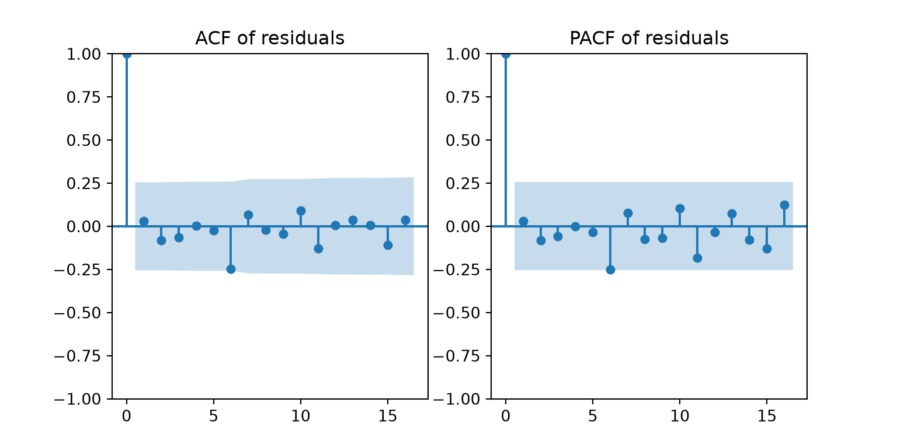
The residuals appear to be white noise, supporting the choice of the third model, whose forecasting ability we now check for the years 1971-1988, left out of the analysis. In total the model must forecast \((1988-1970)\cdot 4 = 72\) observations: the full series has 136 and the part used for estimation 64.
[1] 72[1] 136[1] 64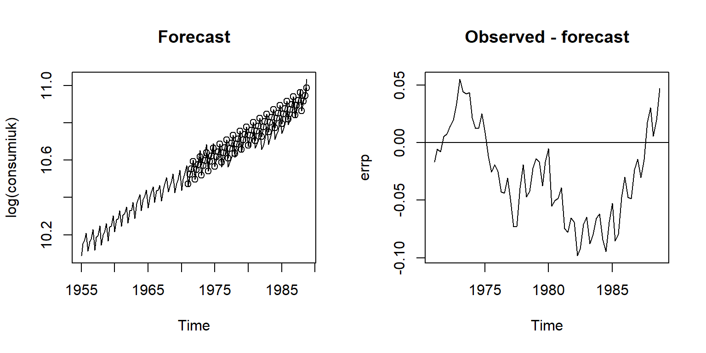
previsione = modtsc.forecast(72)
osservato = np.log(consumiuk)
errp = osservato.iloc[64:].to_numpy() - previsione.to_numpy()
fig, ax = plt.subplots(1, 2, figsize=(8, 4))
ax[0].plot(osservato.to_timestamp(), color="black")
ax[0].plot(previsione.to_timestamp(), "o-", color="black", markersize=2)
ax[0].set_title("Forecast"); ax[0].tick_params(axis="x", labelrotation=45)
ax[1].plot(previsione.index.to_timestamp(), errp, color="black"); ax[1].axhline(0, color="black")
ax[1].tick_params(axis="x", labelrotation=45)
ax[1].set_title("Observed - forecast")
plt.show()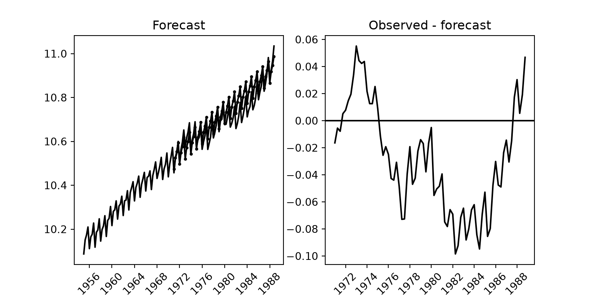
/* estimation over 1955-1970 and forecast of the next 72 quarters */
data cnd_stima; set cnd; if anno > 1970 then lc = .; run;
proc arima data=cnd_stima;
identify var=lc(1,4) noprint;
estimate q=(1)(4) method=ml noprint;
forecast lead=72 id=data interval=qtr out=prev_cnd;
run;
quit;
data confronto;
merge prev_cnd cnd(keep=data lc rename=(lc=osservato));
by data;
errp = osservato - FORECAST;
run;
proc sgplot data=confronto;
title "Forecast";
series x=data y=osservato;
series x=data y=FORECAST / markers;
run;Figure 6.17 shows the observed and forecast values (dotted line) and their difference; the result, though not optimal, is sufficient for our purposes: in any case, the fitted values do not stray far from the observed ones. It should be stressed, however, that with real series it is hard to find a parsimonious model that fits the data very well.
Let us look at another example, the number of international airline passengers in the United States from January 1949 to December 1960; these well-known data are included in R’s standard packages (for Python and SAS we saved them in airpassengers.csv). We follow the classical approach to separate the seasonal from the non-seasonal component; we already know the commands needed.
from statsmodels.tsa.seasonal import STL
air = pd.read_csv("data/airpassengers.csv")
dati = pd.Series(air["passeggeri"].to_numpy(dtype=float),
index=pd.period_range("1949-01", periods=len(air), freq="M"))
# note: statsmodels STL has no equivalent of R's "periodic" option; with a very wide
# seasonal window the result is similar but not identical
scomponi = STL(dati.to_timestamp(), period=12, seasonal=999).fit()
print(pd.DataFrame({"seasonal": scomponi.seasonal, "trend": scomponi.trend,
"remainder": scomponi.resid}).head()) seasonal trend remainder
1949-01-01 -7.367864 119.595482 -0.227618
1949-02-01 2.521788 120.951594 -5.473382
1949-03-01 19.011644 122.220909 -9.232553
1949-04-01 5.172746 123.398669 0.428586
1949-05-01 -3.271252 124.494216 -0.222964proc import datafile="data/airpassengers.csv" out=air dbms=csv replace;
getnames=yes;
run;
data air;
set air;
data = mdy(mese, 1, anno); format data monyy7.;
run;
/* decomposition into trend-cycle and seasonality */
proc timeseries data=air outdecomp=scomp_air;
id data interval=month;
var passeggeri;
decomp tcc sc / mode=add;
run;We can use this decomposition to obtain information on the order of the ARIMA models to fit to the seasonal and non-seasonal parts of the series and, consequently, to specify the corresponding SARIMA as well as possible (Figure 6.18).
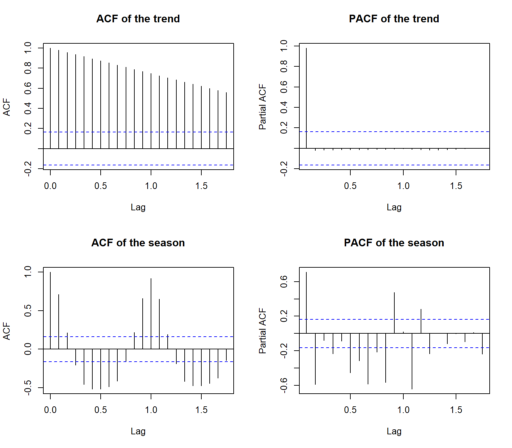
fig, ax = plt.subplots(2, 2, figsize=(8, 7))
plot_acf(scomponi.trend, ax=ax[0, 0], lags=24, title="ACF of the trend")
plot_pacf(scomponi.trend, ax=ax[0, 1], lags=24, title="PACF of the trend")
plot_acf(scomponi.seasonal, ax=ax[1, 0], lags=24, title="ACF of the season")
plot_pacf(scomponi.seasonal, ax=ax[1, 1], lags=24, title="PACF of the season")
plt.tight_layout(); plt.show()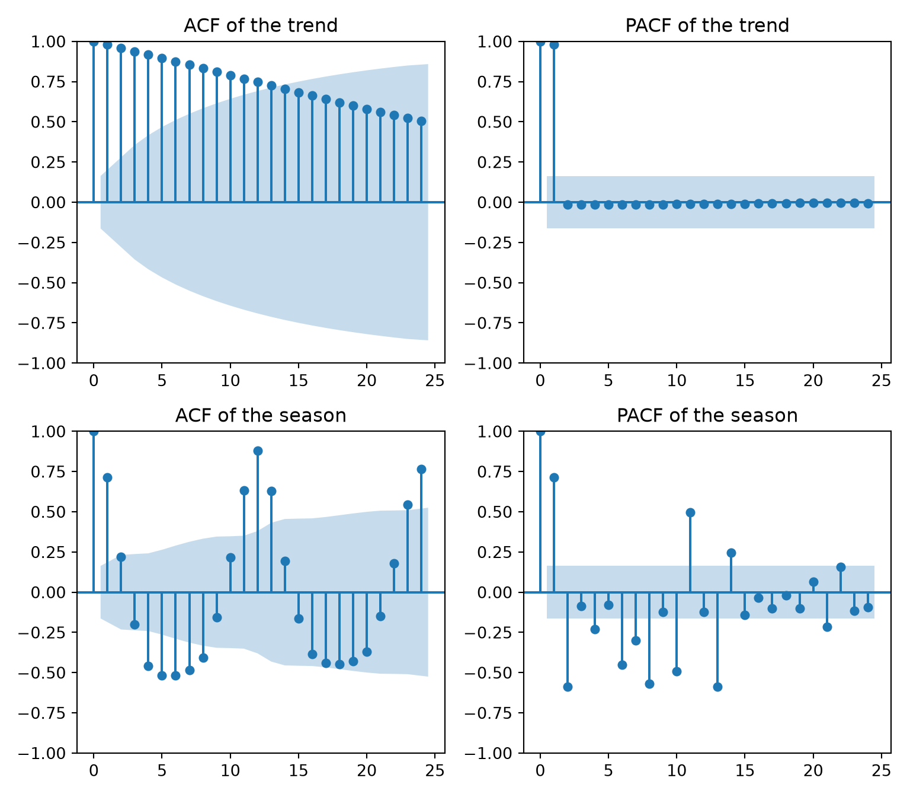
The correlograms suggest differencing the series and trying a first-order autoregression for the trend and a second-order one for seasonality. Hence
Call:
arima(x = dati, order = c(1, 1, 0), seasonal = c(2, 1, 0))
Coefficients:
ar1 sar1 sar2
-0.3438 -0.1184 0.1877
s.e. 0.0855 0.0943 0.1034
sigma^2 estimated as 130.6: log likelihood = -505.62, aic = 1019.24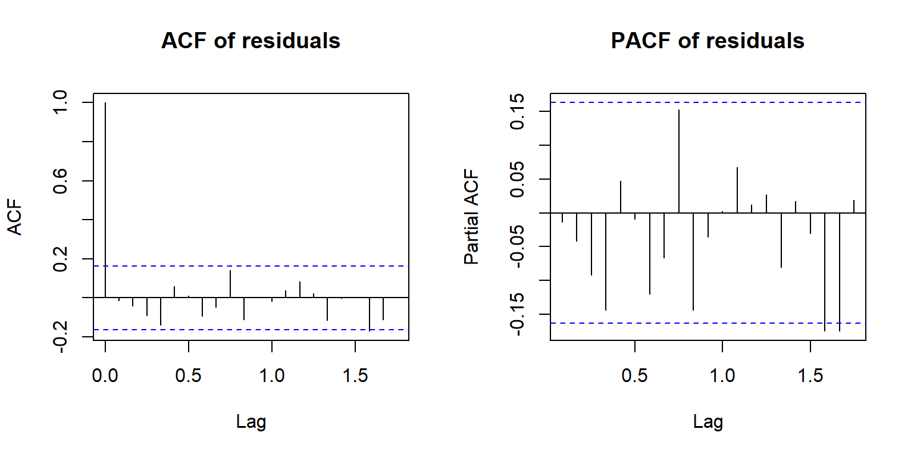
==============================================================================
coef std err z P>|z| [0.025 0.975]
------------------------------------------------------------------------------
ar.L1 -0.3438 0.088 -3.912 0.000 -0.516 -0.172
ar.S.L12 -0.1185 0.093 -1.271 0.204 -0.301 0.064
ar.S.L24 0.1877 0.107 1.754 0.079 -0.022 0.397
sigma2 130.5829 14.908 8.759 0.000 101.363 159.802
==============================================================================The model modpass performs well (Figure 6.19) and can be kept, although it is always advisable to estimate and compare several models. Finally, Figure 6.20 shows the observed values and those forecast by our SARIMA for 1961 and 1962.
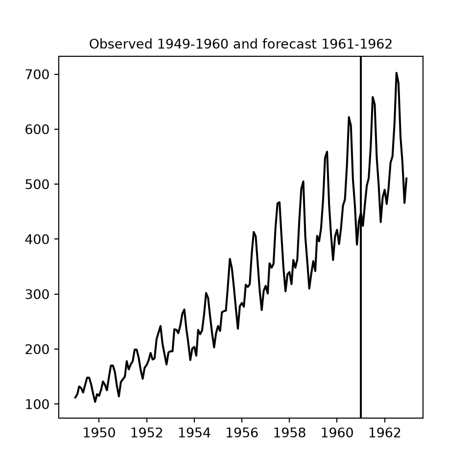